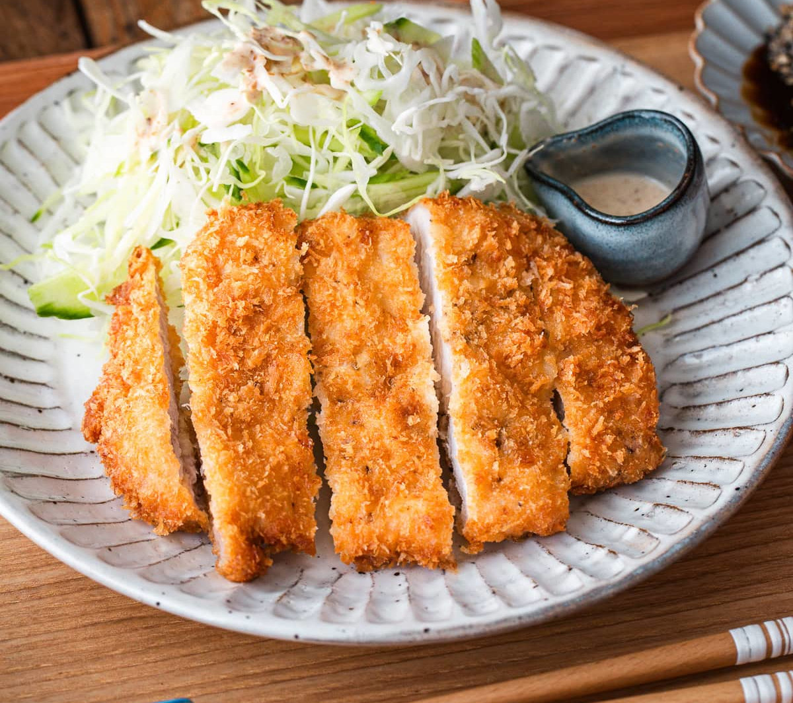

Home
Tonkatsu

Description
Serves 2, scale as needed
Tonkatsu is a a panko breaded deep fried porkchop. The name is derived from the Japanese words "ton" for pork and "katsu" for cutlet. Much like curry
fried cutlets became popular in Japan during the Meiji Era. Based on a French recipe originally using beef, it has been tinkered with over the years
to suit the Japanese pallete. Today it has become widely loved and is available in restaraunts all over Japan.
Ingredients
- 2 boneless porkchops (1/2 inch thich)
- 1 large egg
- 1/2 cup Panko
- 2 Tbsp AP flour
- 3 cups neutral oil (or enough for 2 inches in pot)
- 1/2 tsp kosher salt
- 1/2 tsp ground black pepper
Recipe
- Begin by preparing your panko and eggwash. For the panko, place it in a shallow pan and spray lighty with water to moisten, and let rest 15 minutes.
For your eggwash mix yout egg and 1/2 Tbsp of your oil and whisk until smooth. Then place your AP flouw in a final dredge pan.
- Prepare your cutlets by removing any extra fat and scoring both sides of the connective tissue. Tenderize both sides with the back of the knife
or a mallet. Then mol d the chops back into place.
- Season both sides of your pork chops, then proceed to bread them. Dredge first in the flour, then egg wash before breading in panko. Press the panko
in so it adheres.
- Add oil to pot, making sure it's at least 2 inches deep. Preheat on medium and bring oil to 340°F (170°C). If you lack a thermometer place
a chopstick in the oil. If it bubbles the temp is high enough
- Cook on cutlet at a time to maintain oil temp. Cook 1 minute per side, and set aside on a drip rack.
- Turn off heat while the cutlets rest and clean the oil.
- Once the cutlets have rested bring the temp to 355°F (180°C) and fry each cutlet for an additional 30 seconds on both sides
\
- Leftovers can be frozen and stored for up to a month if you make more, to reheat just place on a lined baking sheet and bake at 350°F (180°C)
for 15-20 minutes if defrosted and 40 if frozen.
Home